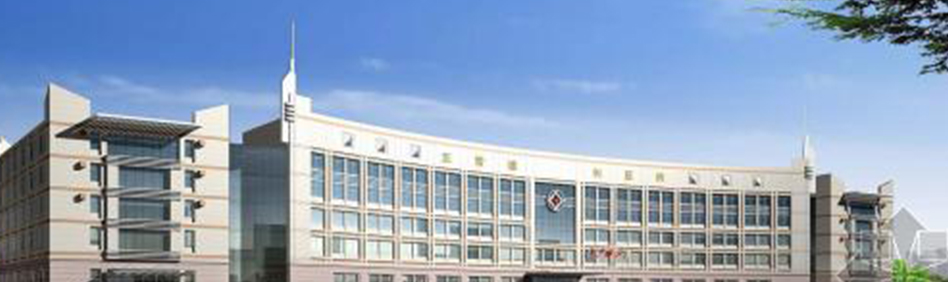

生殖医学中心举行搬迁扩大发展、迈入学科建设新里程揭牌仪式
本站讯 10月23日一早，生殖中心举行搬迁后揭牌仪式，王跃建院长带领院领导、机关职能科室负责人与生殖中心全体工作人员及候诊者一起在一号楼门诊四楼生殖中心候诊大厅，共同见证生殖医学中心揭牌。这标志着生殖中心开展常规体外受精-胚胎移植（IVF-ET）技术和卵细胞浆内单精子显微注射（ICSI）技术的步伐已经迈出，每年将帮助越来越多的、数以千计的不育不孕夫妇实现生育梦想。
揭牌仪式由黄永汉主任主持。黄主任回顾生殖中心从1995年开始近20年走过的路，从无到有、又从有到无，再从零开始直到今天，历经三届院领导，从夫精人工授精技术，到今天开始可以开展体外受精-胚胎移植技术，漫漫长路其中的曲折、辛酸、无奈与坚持，勇气和担当，在整个筹建试管婴儿的几年时间，成功的背后凝聚了医院领导、大妇产科、各部门、全科上下及家人的付出与心血。生殖中心走到今天来之不易，在试运行的这一年，中心将更加珍惜与努力，以王跃建院长提出的“安全、优质、发展”方针，把安全放在首位，逐步地、规范地开展技术，坚持学习，造福不孕不育夫妇。
随后，王跃建院长发表重要讲话。王院长说，生殖中心走过不平凡的路，特别是9月份省卫计委组织国家级人类辅助生殖技术评审专家对我们生殖中心充分肯定，评审通过人类辅助生殖IVF技术项目，可以开展更高级别的辅助性生殖工作，这是对我们充分的肯定，也是对我们学科建设一个很大的支持，解决我们学科建设的发展方向。医院的发展、学科建设如何突破，是选择我们病人急需的问题，等候时间最久的是哪个科室，专家号最急的是哪个科室，我们要感谢我们的病人，病人每天都向我们提出很多合理化的建议，我们那么多的病人需要帮助，医院要集中精力集中我们专家团队把我们学科建设好，提升好。发展的过程确实不容易，医院会记得大家对学科建设作出的贡献，将载入我们医院的发展史册。这对我院妇产科发展也是好的消息，这是我们一个团结大协作的一个成绩。妇产科、医务科、护理部、机电工程科全院各个科室都给予大力的支持，所以才取得我们学科建设应有的成绩。
王院长强调，成绩取得不容易但不是最终目的。我们最终的目的是把我们技术提升，为我们的患者服务，解决他们所需要的临床难题，心理和身体的疾苦。这块金灿灿的牌子，生殖中心也得到新的提升。今后的发展道路还很长，希望其它学科建设也像生殖中心黄永汉主任一样，以服务病人的疾苦为目标，高起点、高要求、高标准，医院也给予大力支持，学科建设一定要有跨度设计和顶层目标，把我们几代人没有实现的目标给予实现，我们是后起的那我们就后起直追，达到国际国内一流的水平。在新的起点上不断地努力不断地提升，为我们广大市民更好地优质服务。
在一片热烈的氛围中，王跃建院长等院领导及生殖中心黄永汉主任团队共同为生殖医学中心揭牌。黄永汉主任代表生殖中心全体成员向王跃建院长呈上印刻着王院长亲自题字”生殖医学中心“的钥匙，感谢医院为生殖中心倾注的心血，打开了生殖中心发展的大门，让生殖中心步上一个新的台阶。伴随着掌声、欢笑声，大家在洋溢着幸福的祥和气氛下参观了生殖中心，这里，留下了大家无数的脚印、辛勤的汗水与集体的智慧，生殖中心将在大家的支持、祝福与鼓励下，一步一个脚印，为以后的发展，打下坚实的基础。
摘录王跃建院长接受记者采访片段：
记者：市一医院经过多年的努力，生殖中心通过了“试管婴儿”评审项目，实现了医院从无到有的突破，王院长您觉得这项技术为医院的学科发展带来怎样的推动作用？
王院长：国家专家组评审，非常专业、非常严格，每一个评审项目，都按照评审标准要求，一项一款，对我们进行逐一审核。专家的评估，是最好的评估标准和水平，对我们的工作是很好的指引。专家评审后，对我们的工作非常肯定，评价我们开展人类辅助生殖技术很规范，很专业，很人性化，包括我们的工作流程和诊疗常规。这对医院意味着很多不孕不育夫妇的需求，可以进一步地得到满足和实现，对病人的服务会大大提升。当今医疗资源非常紧张，既往生殖中心的人工授精术是每年500多个周期。按生殖中心每年8万人次门诊量，一年大约有4000对不孕不育夫妇需采用辅助生殖助孕治疗，现代化的生殖中心投入使用后，开展“试管婴儿”这项工作，可以极大地满足患者的需求，成功率也会大大提高，对我们医院的学科建设起到了很好的促进作用，希望平台大了以后，我们的专业得以发挥，通过学科建设，解决技术瓶颈问题，把工作落到实处，实现更多不孕不育家庭梦，这是医院持之以恒的目标。
采写：朱佩仪
编辑：段园晖
摄影：王楚辉
医院名称：佛山市第一人民医院
医院地址：广东省佛山市禅城区岭南大道北81号 急救中心：2393939939
门诊热线：399449949494 投诉电话：12923003004004
佛山市第一人民医院 2000-2016版权所有

微信公众号